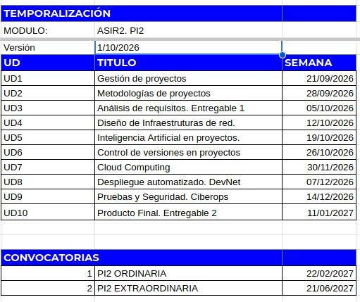

Este curso está diseñado para proporcionar al alumnado de Administración de Sistemas Informáticos en Red (ASIR) una base sólida en la gestión de proyectos tecnológicos de infraestructura, el diseño de arquitecturas de red y servidores, la automatización de procesos y las metodologías modernas de desarrollo y operaciones (DevOps / GitOps / IaC).
A través de un enfoque eminentemente práctico y adaptado a la especialidad de administración de sistemas, el estudiantado aprenderá a planificar, desplegar, asegurar, monitorizar y gestionar proyectos técnicos complejos, preparándolos para los desafíos reales del sector socioproductivo.
Aunque las líneas generales se mantendrán durante todo el curso, esta guía es un documento vivo que puede ir actualizándose (básicamente aclaraciones) a lo largo del curso. Todas las modificaciones serán notificadas a través del foro de Novedades del aula del módulo.
Durante el módulo se trabajarán diversas competencias profesionales y personales con el fin de preparar al alumnado para su futura vida laboral.
Análisis de requisitos, diseño de alto nivel, planificación de fases, gestión de riesgos y documentación del proyecto de infraestructura. Se planifica la implantación o migración de una infraestructura de sistemas y redes aplicando metodologías ágiles (Scrum/Kanban) y herramientas de gestión profesional (Jira, Trello).
Definición y documentación detallada de la arquitectura de la infraestructura: topología de red lógicos y físicos, configuración de servidores de sistemas operativos, políticas de seguridad, direccionamiento y planes de virtualización o alta disponibilidad.
Núcleo de la ejecución técnica: implantación de sistemas operativos de servidor (Linux/Windows), despliegue de servicios de red (web, DNS, DHCP, bases de datos), configuración de seguridad activa y automatización de tareas y despliegues mediante scripting e Infraestructura como Código (IaC).
Uso experto de control de versiones (Git/GitHub) aplicado a configuraciones e infraestructura, automatización mediante Integración y Despliegue Continuo (CI/CD / GitOps), testing de carga, seguridad y recuperación ante desastres (DRP), e integración de la IA como herramienta de productividad en operaciones.
Puesta en producción y operación continua de la infraestructura: configuración del entorno de despliegue (servidores, contenedores), securización de comunicaciones, despliegue final y monitorización centralizada (métricas de CPU, RAM, uptime, latencia, logs y alertas) para garantizar el rendimiento y la disponibilidad.
La formación del módulo contribuye a alcanzar un conjunto de competencias clave divididas en transversales y técnicas específicas de ASIR:
| Módulo | Resultado de Aprendizaje (RA) | Criterios de Evaluación (CE) | Objetivos Asociados (OG) |
|---|---|---|---|
| 0379 - Proyecto Intermodular II (ASIR) | RA1: Identifica necesidades del sector productivo, relacionándolas con proyectos tipo que las puedan satisfacer. | c, f | OG1 |
| RA2: Diseña proyectos relacionados con las competencias expresadas en el título, incluyendo y desarrollando las fases que lo componen. | b, c, d, h, i | OG1, OG2 | |
| RA3: Planifica la ejecución del proyecto, determinando el plan de intervención y la documentación asociada. | a, e, f | OG1 | |
| RA4: Define los procedimientos para el seguimiento y control en la ejecución del proyecto, justificando la selección de variables e instrumentos empleados. | b, c | OG1 |
| Módulo de ASIR | Resultado de Aprendizaje (RA) | Criterios de Evaluación (CE) | Objetivos (OG) |
|---|---|---|---|
| 0369 – Implantación de sistemas operativos | RA1: Instala sistemas operativos, analizando sus características e interpretando la documentación técnica. | Todos | OG3, OG5 |
| RA2: Configura el software de base, analizando las necesidades de explotación del sistema informático. | Todos | OG4 | |
| 0370 – Planificación y administración de redes | RA2: Integra ordenadores y periféricos en redes cableadas e inalámbricas, evaluando su funcionamiento y prestaciones. | Todos | OG1, OG2 |
| 0372 – Gestión de base de datos | RA5: Modifica la información almacenada utilizando asistentes, herramientas gráficas y el lenguaje de manipulación de datos. | Todos | OG3 |
| 0374 – Administración de sistemas operativos | RA3: Genera interfaces naturales de usuario / scripts utilizando herramientas visuales y administrativas. | Todos | OG2, OG4 |
| 0375 – Servicios de red e internet | RA1: Administra servicios de resolución de nombres, analizándolos y garantizando la seguridad del servicio. | Todos | OG3 |
| RA2: Administra servicios de configuración automática, identificándolos y verificando la correcta asignación de los parámetros. | Todos | OG1, OG3, OG4, OG5 | |
| 0377 – Administración de sistemas gestores de base de datos | RA2: Configura el sistema gestor de bases de datos interpretando las especificaciones técnicas y los requisitos de explotación. | Todos | OG3, OG5 |
| RA3: Implanta métodos de control de acceso utilizando asistentes, herramientas gráficas y comandos del lenguaje del sistema gestor. | Todos | OG2, OG3 | |
| 0378 – Seguridad y alta disponibilidad | RA2: Implanta mecanismos de seguridad activa, seleccionando y ejecutando contramedidas ante amenazas o ataques al sistema. | Todos | OG4, OG5 |
El módulo está estructurado en 6 unidades formativas fundamentales para la especialidad de ASIR, divididas en dos fases principales:
| Unidad | Título de la Unidad / Sesión | Tipo | Contenidos Clave para ASIR |
|---|---|---|---|
| UD1 | Gestión de proyectos | Teórico-Práctica | Organización del ciclo de vida del proyecto, definición de objetivos, alcance, planificación inicial y seguimiento del trabajo en equipo. |
| UD2 | Metodologías de proyectos | Teórico-Práctica | Estudio de metodologías de gestión de proyectos (ágiles, tradicionales y híbridas), roles, reuniones, planificación y control del progreso. |
| UD3 | Análisis de requisitos. Entregable 1 | Teórico-Práctica | Recogida de requisitos del cliente, análisis funcional, priorización, documentación inicial y elaboración del primer entregable del proyecto. |
| UD4 | Diagramas de topologías | Teórico-Práctica | Diseño de topologías lógicas y físicas de red, representaciones gráficas de infraestructura, servicios y conexiones entre elementos. |
| UD5 | Aplicación de la IA | Teórico-Práctica | Uso responsable de herramientas de inteligencia artificial para análisis, documentación, automatización de tareas y apoyo a la toma de decisiones técnicas. |
| UD6 | Control de versiones | Teórico-Práctica | Gestión de repositorios, Git, ramas, commits, trabajo colaborativo y trazabilidad del desarrollo del proyecto. |
| UD7 | Despliegue automatizado. Devnet. | Teórico-Práctica | Automatización de despliegues, entorno de trabajo DevNet, configuración de servicios, pruebas de integración y mejora del flujo de entrega. |
| UD8 | Pruebas y Seguridad | Teórico-Práctica | Validación funcional, análisis de riesgos, seguridad de la infraestructura, pruebas de calidad y medidas preventivas frente a amenazas. |
| UD9 | Planificación temporal | Teórico-Práctica | Definición de cronogramas, estimación de tareas, reparto temporal, seguimiento del progreso e identificación de hitos. |
| UD10 | Producto Final. Entregable 2 | Teórico-Práctica | Cierre del proyecto, presentación del producto final, documentación del entregable final y valoración global del resultado. |
Sesiones individuales y colectivas dedicadas a la tutorización personalizada del proyecto, resolución de incidencias de despliegue y preparación de la prueba final presencial.
La evaluación es continua, formativa e integradora.
| Instrumento | Descripción | Peso | Nota Mínima |
|---|---|---|---|
| Proyecto Intermodular I | Nota obtenida en el módulo previo de Proyecto Intermodular I | 10% | >= 5.0 |
| Documentación | Elaboración y entrega de la documentación técnica y arquitectónica ([Reto 2]) | 20% | >= 5.0 |
| Proyecto | Implantación técnica del proyecto de infraestructura y repositorio GitHub | 40% | >= 5.0 |
| Defensa | Exposición oral presencial (PechaKucha + Vídeo) y Mesa Redonda | 20% | >= 5.0 |
| Participación | Intervención activa en foros, debate y aportaciones en la mesa redonda | 10% | No exige mín. |